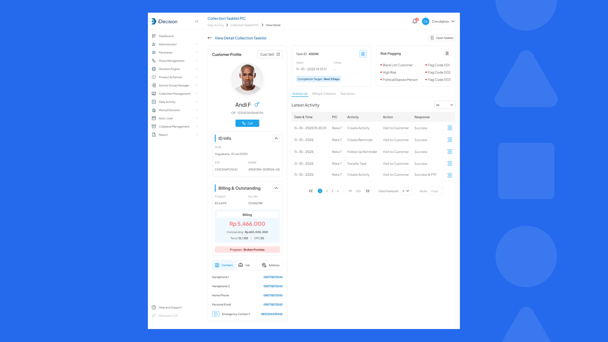
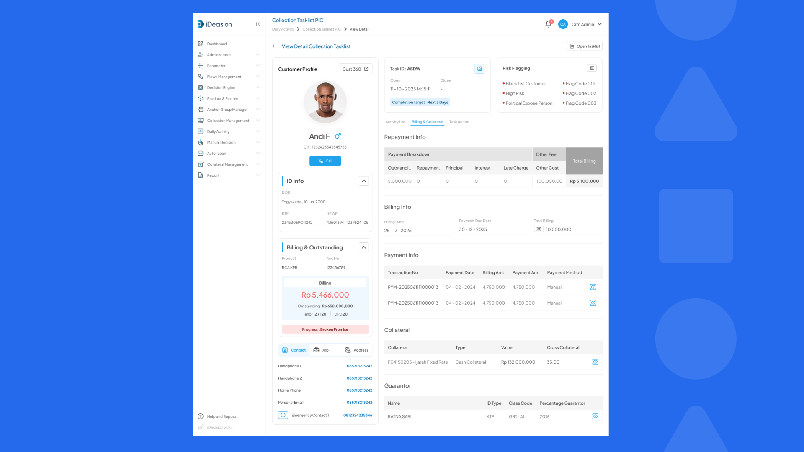
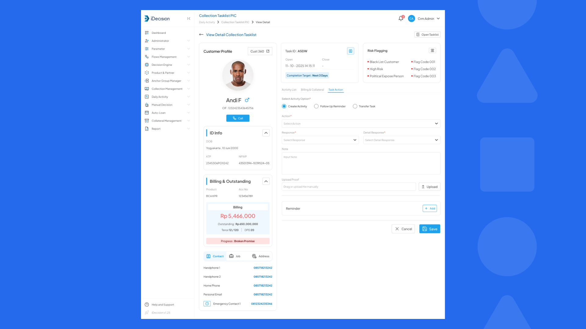

Problem Statement
How might we design a comprehensive desktop interface for Collection PICs that consolidates complex financial data, risk indicators, and task management without causing cognitive overload?
Key Pain Points
- Fragmented Workspaces: PICs previously had to switch between multiple tabs or core banking systems to view customer data, billing history, and collateral details.
- Inefficient Task Execution: Logging calls, setting reminders, and uploading proof of payment were disjointed processes.
- Risk Blind Spots: Critical risk flags (e.g., Blacklist, High Risk, Political Exposed Person) were buried in secondary menus, leading to delayed strategic decisions.
Goals & Success Metrics
Business Goals
- Decrease Average Handling Time (AHT) per collection case.
- Improve data accuracy in collection activity logs.
- Accelerate the resolution of high-risk accounts.
Users Goals
- Gain a complete understanding of a debtor's situation in under 10 seconds.
- Access detailed billing breakdowns and collateral info without leaving the page.
- Log activities, transfer tasks, and set reminders seamlessly during a live call.
UX Success Metrics
- Time taken to complete an Activity Log.
- Reduced error rates in form submissions.
- Qualitative feedback on dashboard readability and workflow fluidity.
UX Strategy : The 360-Degree Command Center
In enterprise B2B Fintech, density is necessary, but clutter is the enemy. The interface must balance comprehensive data display with clear, logical workflows.
Strategy Approach Position the dashboard as:
- A Single Source of Truth (Cust 360).
- A structured, tabbed workspace.
- A proactive risk-management tool.
Solution Designing a "View Detail Collection Tasklist" that utilizes a persistent contextual sidebar for crucial debtor profiles, paired with a dynamic tabbed main area dedicated to deep-dive data and action execution.
Core Concept & Workflow
1. Persistent Context (The Sidebar) The left panel acts as an anchor. No matter which tab the PIC is viewing, they always have immediate access to the Customer Profile, ID Info, real-time Billing & Outstanding status (e.g., Rp 5,466,000 | Progress: Broken Promise), and quick-contact actions (Call/Email).
2. Proactive Risk Flagging Placed prominently at the top right, the "Risk Flagging" panel uses explicit red indicators to immediately alert the PIC if the customer is Blacklisted or High Risk, allowing them to adjust their negotiation strategy instantly.
3. Categorized Deep Dives (Activity & Billing Tabs) The main workspace is divided into logical tabs to prevent information overload:
- Latest Activity: A clear, chronological data table tracking every interaction, PIC involved, and the corresponding response.
- Billing & Collateral: A detailed financial breakdown including Repayment Info, Transaction History, and Collateral/Guarantor details for in-depth analysis.
4. Frictionless Execution (Task Action Tab) A dedicated workspace for operational output. PICs can log a new activity, schedule a follow-up reminder, or transfer the task. The form utilizes progressive disclosure (dynamic dropdowns for Action and Response) and includes a drag-and-drop area for uploading proof, streamlining the reporting process.
Application Design



Design Decision
- Two-Column Architecture: Separates static contextual data (sidebar) from dynamic operational data (main tabs) to establish a clear visual hierarchy.
- Information Density via Accordions: Using collapsible menus (like ID Info and Billing & Outstanding in the sidebar) allows for high data density without cluttering the viewport.
- Standardized Data Tables: Utilizing clean, easily scannable tables with pagination for activity logs and transaction histories to support heavy data reading.
- Context-Aware Forms: The Task Action tab is placed adjacent to the data, allowing the PIC to type notes while referencing the customer's profile simultaneously.
Impact & Result
User Impact
- Minimized cognitive load by eliminating the need to memorize data while switching screens.
- Increased confidence during customer calls due to immediate access to comprehensive billing breakdowns and risk flags.
- Smoother administrative workflow with the integrated action and upload forms.
Business Impact (Projected)
- Higher daily case clearance rate due to a more efficient interface.
- Better audit trails and compliance tracking through standardized activity logging.
- Faster identification and handling of high-risk debtors, minimizing potential losses.
Learning & Reflection
- Density requires structure: Enterprise users need a lot of information on one screen. The key is not to hide data, but to group it logically using tabs, accordions, and clear typographic hierarchies.
- Context is king: Keeping the customer's core financial and contact details permanently visible while users navigate other tabs is crucial for desk collectors who are on live calls.
- Form optimization drives compliance: If logging an activity takes too many clicks, users will find workarounds. Integrating the "Task Action" form directly into the detail view significantly boosts accurate documentation.